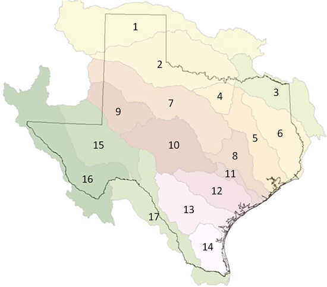

Texas Watersheds by Ecological Drainage Unit

- Canadian River
- Upper Red River
- Lower Red River
- Upper Trinity
- Lower Trinity
- Sabine - Neches
- Brazos River - Prairie
- Lower Brazos River
- Colorado River - Prairie
- Colorado River - Edwards Plateau
- Lower Colorado River
- Guadalupe - San Anontio
- Corpus Cristi - Frio - Nueces
- Laguna Madre
- Lower Pecos River
- Middle Rio Grande
- Lower Rio Grande